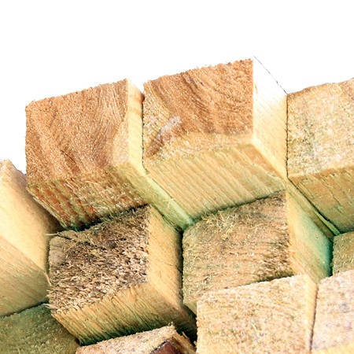
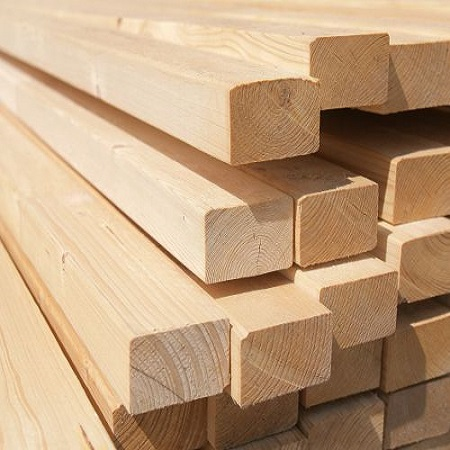

G.J.S. Galiński
Drzwo budowlane


Łaty są materiałem budowlanym wykorzystywanym w konstrukcjach drewnianych. Stosuje się je m.in. w więźbie dachowej do ułożenia pokrycia dachowego. Przy deskowaniu pełnym można stosować dodatkowo kontrłaty, które są ustawiane prostopadle do łat. W ofercie posiadamy łaty nieheblowane, szorstkie (impregnowane) i oheblowane suszone (nieimpregnowane). Standardowy wymiar to 40x60mm (impregnowane) ; 38x63mm (heblowane)
Wymiary
- 45x65mm "świeże", szorstkie - dł. 3,50m /4,0m
- 40x63mm heblowane, suszone - dł. 2,50m/4,80m/ 5,0m
Cena
2,50 zł/mb brutto (impregnowane)
4,20 zł/mb brutto (nieimpregnowane)